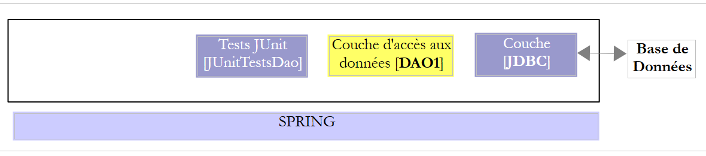
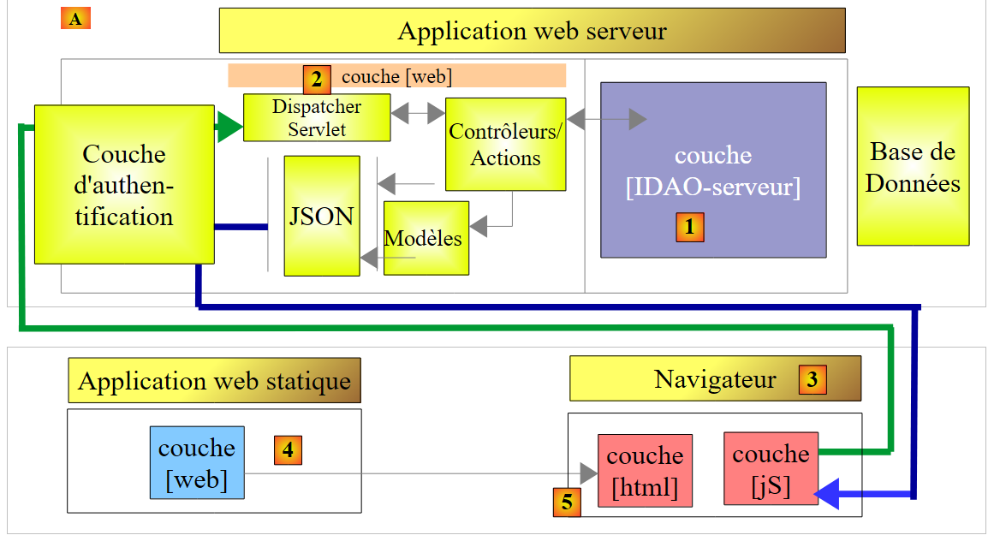
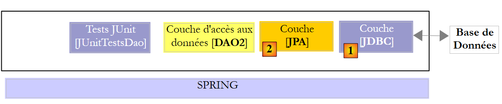

22. Conclusão
Recapitulemos o que fizemos neste documento. Analisámos duas camadas [DAO] com uma das duas arquiteturas seguintes:
 |
 |
A camada [DAO1] foi implementada com o Spring JDBC e a camada [DAO2] com o Spring JPA. As camadas [DAO1] e [DAO2] implementavam a mesma interface [IDAO], o que permitiuescrever um único teste [JUnitTestDao] para testar as duas camadas [DAO];
Feito isto, expusemos a interface [IDAO] na Web da seguinte forma:
 |
- em [1], a camada [IDAO] foi exposta na Web através de uma camada Web [2] implementada pelo Spring MVC. É, de facto, a interface [IDAO] que está exposta e criámos duas versões do serviço web, consoante esta interface seja implementada com uma arquitetura [DAO-JDBC] ou [DAO-JPA-JDBC];
- em [B], um cliente remoto utiliza as URL expostas pelo serviço web, que dão acesso aos métodos da camada [IDAO-serveur]. Assegurámos que a camada [DAO-Client] [3] implementasse a interface [IDAO-serveur] [1]. Isto permitiu-nos utilizar o mesmo teste [JUnitTestDao], que já tinha sido utilizado duas vezes;
- no [3], a camada [DAO-client] foi implementada com o Spring RestTemplate;
Feito isto, protegemos o acesso ao serviço web:
 |
- em [5], o pedido HTTP do cliente passa por uma camada de autenticação implementada com o Spring Security;
Assim, evoluímos a arquitetura anterior para a seguinte:
 |
- em [3], a aplicação do cliente é, ela própria, uma aplicação web fornecida pelo servidor web [4]. A aplicação cliente apresenta no navegador um formulário [5] que permite consultar os URL do serviço web seguro. Os acessos HTTP ao serviço web seguro são efetuados através de uma camada [jS] implementada em JavaScript. Esta arquitetura utiliza o que se denomina «pedidos entre domínios»:
- o serviço web apresenta URL com o formato [http://machine1:port1/];
- a aplicação web cliente é descarregada a partir de um URL [http://machine2:port2/]. Se [http://machine2:port2/] não for idêntico a [http://machine1:port1/] (mesma máquina, mesma porta), então o navegador do cliente bloqueará as chamadas HTTP da camada [DAO-client-js]. Para resolver este problema, o serviço web deve autorizar os pedidos entre domínios;
Os projetos apresentados foram testados com as seguintes seis bases de dados:
- MySQL 5 Community Edition;
- SQL Server 2014 Express;
- PostgreSQL 9.4;
- Oracle Express 11g versão 2;
- IBM DB2 Express-C 10.5;
- Firebird 2.5.4;
Para cada um destes SGBD, foram desenvolvidas quatro camadas [DAO] diferentes:
- uma camada implementada com Spring JDBC;
- uma camada implementada com o Spring JPA e o fornecedor JPA Hibernate;
- uma camada implementada com o Spring JPA e o fornecedor JPA EclipseLink;
- uma camada implementada com o Spring JPA e o fornecedor JPA OpenJPA;
Foi, portanto, apresentado um conjunto de vinte e quatro configurações diferentes. Foi feito um grande esforço de fatorização:
- a maior parte do código é escrita apenas uma vez. Baseia-se em dois projetos Maven de configuração:
- um configura a camada JDBC;
- o outro configura a camada JPA;
 |
 |
O projeto de configuração Maven da camada JDBC [1] de um SGBD específico permite:
- importar o arquivo do controlador JDBC;
- definir as credenciais de acesso à base de dados utilizada e os diferentes comandos SQL que a camada [DAO1] irá emitir para o controlador JDBC. Embora o SQL seja padronizado, surgiram problemas de portabilidade, essencialmente devido à presença, nas consultas, de nomes de tabelas/colunas que se revelaram ser palavras-chave proibidas em certos SGBD (tabela ROLES para DB2, coluna PASSWORD para Firebird). Além disso, embora um nome de coluna seja normalmente insensível à maiúscula/minúscula, verificou-se um problema com o PostgreSQL relativamente à coluna ID da chave primária das tabelas. O sistema exigiu que esta se chamasse id, toda em minúsculas;
Os três projetos Maven de configuração da camada JPA, [2] de um SGBD específico permitem:
- importar o arquivo da implementação JPA;
- configurar a implementação JPA utilizada para o SGBD específico ligado. Com efeito, é a camada JPA que emite as ordens SQL para a camada JDBC. Para ser eficaz, tem de conhecer o SGBD, a fim de lhe enviar as ordens SQL que este reconhecerá. Essas ordens poderão utilizar o SQL, proprietário deste SGBD, bem como as características específicas deste último (tipos de dados, sequências, triggers, procedimentos, geração automática de chaves primárias, etc.);
Assim, foram criados vinte e quatro projetos (4 configurações x 6 SGBD) de configuração do Maven, nos quais se basearam todos os outros projetos de exploração da base de dados. Nos esquemas acima, uma vez que as camadas [DAO1] e [DAO2] oferecem a mesma interface, as 24 configurações das duas arquiteturas acima foram testadas com a única classe de teste [JUnitTestDao]. Depois de verificadas estas arquiteturas, não houve mais dificuldades:
- o projeto Maven para a publicação da base de dados na Web assenta nestas duas arquiteturas. Existem, portanto, também aqui 24 configurações possíveis;
- o projeto Maven para a segurança do acesso ao serviço web baseia-se no projeto anterior e tem, por sua vez, 24 configurações possíveis;
- por fim, o projeto Maven que permite as solicitações entre domínios ao serviço web seguro baseia-se no projeto anterior e também tem 24 configurações possíveis;
Embora não aborde todas as capacidades da linguagem Java nem todos os seus domínios de aplicação, este documento pode ser utilizado como material de aprendizagem da linguagem. O leitor que tiver assimilado o conteúdo deste curso terá atingido um nível «Java avançado», tanto na utilização da linguagem como na do framework Spring. Poderá então prosseguir a sua formação em Java com as seguintes obras:
- [Spring MVC et Thymeleaf par l'exemple] [http://tahe.developpez.com/java/springmvc-thymeleaf], que aprofunda a aprendizagem do ecossistema Spring, apresentando o seu ramo «programação web MVC». Utiliza uma base de dados mais complexa do que a estudada aqui;
- [Tutoriel AngularJS / Spring MVC] [http://tahe.developpez.com/angularjs-spring4], que apresenta uma arquitetura web cliente/servidor, em que o cliente é implementado com o framework [AngularJS] e o servidor com [Spring MVC];
- [Introduction à Java EE] [http://tahe.developpez.com/java/javaee], que abandona o ecossistema Spring em favor de uma arquitetura web baseada em JSF (Java Server Faces) e EJB (Enterprise Java Bean);
- [Introduction à la programmation des tablettes Android] [http://tahe.developpez.com/android/exemples-intellij-aa], que descreve uma arquitetura cliente/servidor, em que o cliente é um tablet Android programado em Java e o servidor é um serviço web implementado pelo Spring MVC;